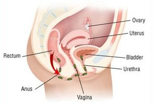

_
Results Speak More Than Words
Before and After 10 days of therapy with Uva tea

Mercado Honesto, Philippines, Bacoor Cavite, age 62. January 13, 2015 has problem with chest. Found in left hemithorax 577 cc fluid.
His Dr I.G. prescribed antibiotics, but Honesto refused it. He asked me if Uva tea ca cure him. I gave him therapy for first 2 days (3 x 2 cups of tea) 6 tea cups in one day. Next 5 days only 3 times a day 1 tea bag. I was monitoring him and he said he felt better. After 10 days he got another check up.
KIDNEY INFECTION, PYELONEPHRITIS, UTI BLADDER INFECTION, VAGINAL INFECTION
Kidney infection, Urinary Tract Infection, Vaginal infection are most commonly caused by the bacterium Escherichia Coli, which comes from colon and enters through the urethra into the bladder, where it begins to multiply and spread.
If infection affects only urethra it is called Urethritis.
When bladder infection occurs, it is called cystitis. With further development of bacteria, they can enter kidneys and lead to very serious consequences (Pyelonephritis).
In this picture we can see how E coli bacteria is coming out from the anus, which is very close to vagina, enters the vagina and urinary canal, bladder and finally kidneys. How to prevent and cure a vaginal infection, kidney infection, the bladder and ureter infections.
Destroy E. coli bacteria and other bacteria after bowel movements, washing with Uva Feminine Wash and prevent the arrival of bacteria from anus to vagina and urethra.
Wash your anus and vagina with Feminine Wash and you will destroy all bacteria and thus prevent infection and spread of bacteria, create a fresh and good smell of your vagina.
The rest of the bacteria found in vagina and urethra, bladder and kidneys, destroy them by drinking Uva tea 3 times a day after meals for 7 days. It will make your body have a healthy intimate region with a good smell.
After 7 days, whole urinary tract is completely healthy, bacteria-free, the kidneys can work normally. You and your partner, husband or boyfriend need to be treated with the Uva Tea at the same time and in the same way as you (3 times a day after meals for 7 days). In this way, both of you will be healthy and will enjoy your intimate life.
Now you can be sure that you can prevent kidney infection, bladder, and vaginal infection, give to your partner health security and pleasant feeling in an intimate relationship.
Wash your intimate parts once in a day with Uva Feminine Wash, all this in a completely natural and organic way. Think well, your EUROHERBAL Uva Tea! Have a long and healthy life!
Uva Tea against five carcinoma cell lines - Colon Cancer; Prostate Cancer; Skin Cancer, melanoma; Breast Cancer
Head of Project: Ryszard Amarowicz, Prof.
Associated Professor: Wioletta Błaszczak, Ph.D., D.Sc.
Assistant Professor: Magdalena Karamać, Ph.D., D.Sc. , Tomasz Jeliński, Ph.D.
Senior Specialists: Andrzej Ornowski, M.Sc.
Specialist: Katarzyna Sulewska, M.Sc.
Technologists: Kamila Penkacik, M.Sc.Ph.D.
Students: Janiak Michał, M.Sc. Adrian Górecki, M.Sc.
Inhibition of proliferation of human carcinoma cell lines by phenolic compounds
from a Uva - leaf crude extract and its fractions
Read this scientific article here
Phenolic compounds were extracted from the leaves of Uva - bearberry, a potential functional food ingredient, using 80% (v/v) aqueous ethanol after which the resultant crude extract was applied to a Sephadex LH-20 column. A fraction comprising low-molecular-weight phenolics (LMW fraction) and sugars was eluted from the column with 95% (v/v) ethanol. A tannin fraction was then obtained after switching the mobile phase to acetone/water (1:1, v/v). Phenolic compounds present in the crude extract and its two fractions showed antiproliferative activities in a concentration-dependent manner against five carcinoma cell lines, namely MCF-7 (estrogen receptor-positive breast carcinoma), DU-145 (androgen receptor-negative prostate carcinoma), HT-29 (colon carcinoma), SK-MEL-5 and MDA-MB-435 (melanoma; skin carcinoma). IC50 data revealed that the tannin fraction was best at retarding cell proliferation in the tested cancer cell lines. The greatest inhibition at 1.5 μg fraction/mL assay was observed for the HT-29 colon carcinoma cell line. The proliferation of SK-MEL-5 skin carcinoma cells was also strongly inhibited by both the crude extract and LMW fraction. MDA-MB-435 cells were found to be the least sensitive for the materials tested, particularly for the LMW fraction. Inhibition of proliferation of human carcinoma cell lines by phenolic compounds from a bearberry-leaf crude extract and its fractions.
Inflammation of prostate is possible for any age, so no man is exempt. It comes silently and symptoms are often minor. Drugs from pharmaceutical industry are powerless in treatment of prostate disease. The only reliable remedy is completely natural, Euroherbal Uva medical tea, which in a very short period of time to treat prostate disease.
Recent scientific research expert team led by Dr. Boro Mirko Vujasin, herbalist Milan Adzic and Dr Zoran Mancev regarding the increasing number of male population suffering from prostate problems. In its early stage, the disease leads to inflammation and enlargement of the prostate, and later a more severe disease, prostate cancer.
The function of the prostate is also closely related to reproduction and potency as a direct threat to the birthrate (white plague)! The importance of the function of the prostate is not sufficiently presented to the public, of course, in recent years increasing numbers of sufferers in the category of 20 year-olds, what should be an alarm for health workers and the ministry of health. Until the advent of more widespread disease and younger generation comes as a consequence of antibiotic resistance. Professor Dame Sally Davies said before the Committee on Science and Technology of the British Parliament to the growing resistance of bacteria could soon make us even routine operations become at risk of fatal injury possible infection for which there is no effective treatment. The development of antibiotics in the forties of the last century was one of the greatest advances in medicine, but they become rapidly ineffective as bacteria develop resistance to them. Prof. Davis says that for the treatment of gonorrhea is efficient with only one antibiotic, and that 80 percent of cases show resistance to "tetracycline". Luckily there is an answer from nature that is persistently pushed under the carpet by the pharmaceutical industry and it is medical Uva tea.
NEW - Total Price Calculator
Try out our Price Calculator and compare the prices based on the desired quantity. Click here
- HIGHEST IN PURINES (400 mg. uric acid/100 g and higher)
- Fish, sardines in oil 480
- Liver, Calf's 460
- Mushroom, edible Boletus, dried 488
- Neck sweet bread, Calf's 1260
- Ox liver 554
- Ox spleen 444
- Pig's heart 530
- Pig's liver 515
- Pig's lungs (lights) 434
- Pig's spleen 516
- Sheep's spleen 773
- Sprat, Theobromine 804
- Yeast, Baker's 2300
- Yeast, Brewer's 680
- MODERATELY HIGH IN PURINES
- Black gram (mungo bean), seed, dry 222
- Fish, Herring, Atlantic 210
- Fish, Redfish (ocean perch) 241
- Fish, trout 297
- Fish, Tuna 257
- Liver, chicken 243
FOOD - PURINES
The higher intake of foods rich in purines (e.g., liver, kidney, sardines) contributes to hyperuricemia or gout, or a strict diet low-purine, lowering urate levels in plasma of about 60 mmol / L (1 mg / dL).
Urates precipitate as needle-shaped crystals of monosodium urate, which can accumulate in the extracellular tissue without vessels (e.g. cartilage), in poorly vascularized tissue (e.g. tendons, tendon sheath, ligaments, synovial bursa) and around the cooler, distal joints and tissues (e.g. ear). In the long-term, severe hyperuricemia, urate crystals aggregate in larger central joints in parenchymal organs, for example, kidneys. The acidic pH of urine urate easily toppling the form of small plate or irregular crystals who have a way to aggregate to form sand or stones with the risk of obstruction. Tofi are monosodium urate crystal deposits that occur mainly in and around the joints and in the skin.
The more severe the disease and the more it lasts, the greater is the likelihood and severity of symptoms. Urate levels may be elevated due to reduced excretion, increased production or increased intake of purines. It is not clear why only some people with hyperuricemia suffer from gout.
Dr Keiichi Morishita
The Hidden Truth of Cancer
If the blood develops a more acidic condition, then these excess acidic wastes have to be deposited somewhere in the body. If this unhealthy process continues year after year, these areas steadily increase in acidity and their cells begin to die. Other cells in the affected area may survive by becoming abnormal, these are called malignant. Malignant cells cannot respond to brain commands. They undergo a cellular division that is out of control. This is the beginning of cancer.
Modern medicine treats these malignant cells as if they were bacteria and viruses, it uses chemotherapy, radiation and surgery to treat cancer. Yet none of these treatments will help very much if the environment of the body continues to remain acidic.
However, modern medicine has many paradoxes and dogmas in its theories. These paradoxes are mostly due to the acceptance of the basic concepts of German physicist Virchow’s theory, i.e.,
Omnis cellula e cellula (all cells come only from cells), and this has been generally believed to be a “golden rule” in the biological and medical sciences.
Dr. Theodore Baroody
Alkalize or Die
Though it sounds more like a chemistry lesson than a health warning, Baroody says that we must alkalize our bodies, thereby restoring our alkaline-acid balance, if we are to reach high levels of vitality and strength.
The countless names of illnesses do not really matter. What does matter is that they all come from the same root cause... too much tissue acid waste in the body!
The small intestine performs many functions and has many different parts necessary to health. Among these are the all-important Peyer's Patches in the upper portion of the small intestines which are crucial to life. They are essential for proper assimilation of food throughout the system and supply an important link between the autonomic and cerebrospinal nervous system by producing lymphatic system's wide ranging nodal network. Further, they produce large amounts of enzyme chyle. This is in my opinion, the major alkalizing substance created in the physical body. Thus, the uninterrupted flow of chyle into the system is paramount. Too much acid waste production from acid-forming foods is a great burden on the Peyer's Patches and lessens the production of chyle.